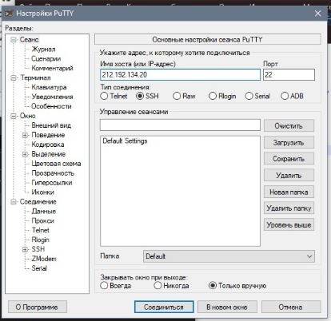
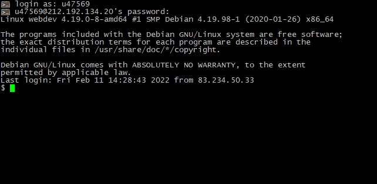
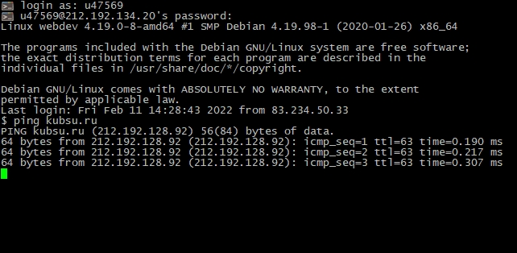
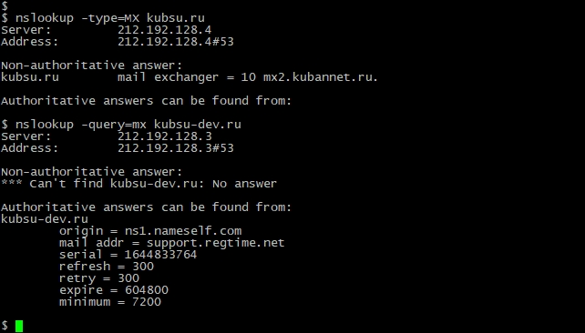
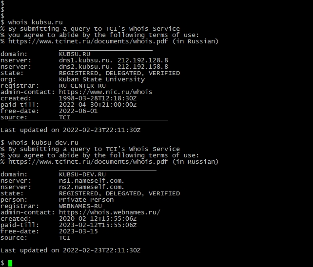
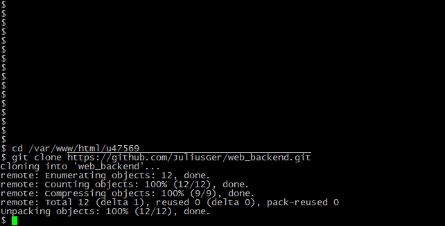

Подключение к учебному серверу по SSH с помощью клиента Putty


С помощью команды ping на учебном сервере узнали IP-адрес веб-сервера kubsu.ru.
Ping работает путем отправки пакетов эхо-запросов протокола ICMP на целевой хост
и ожидания ответа на эхо-запрос ICMP.

Использование утилиты nslookup для того, чтобы узнать A-записи и MX-записи доменов kubsu.ru и kubsu-dev.ru
NSLOOKUP — это утилита, которая находится на локальном компьютере и позволяет узнать содержимое DNS.
Address record указывает на конкретный IP-адрес домена. Без нее сайт работать не будет. По этой записи система
определяет к какому серверу обращаться за получением информации, когда пользователь вводит название сайта в
адресную строку веб-браузера.
MX-запись задает почтовый сервер, который будет принимать и отправлять почту для данного домена. Запись может
указывать на внутренний или внешний почтовый сервер.

С помощью команды whois узнаем даты регистрации доменов kubsu.ru и kubsu-dev.ru
WHOIS-сетевой протокол прикладного уровня, базирующийся на протоколе TCP. Основное применение — получение
регистрационных данных о владельцах доменных имён, IP-адресов и автономных систем.

Клонирование репозитория при помощи git clone

FTP-соединение через FileZilla, копирование файлов с сервера на локальный компьютер